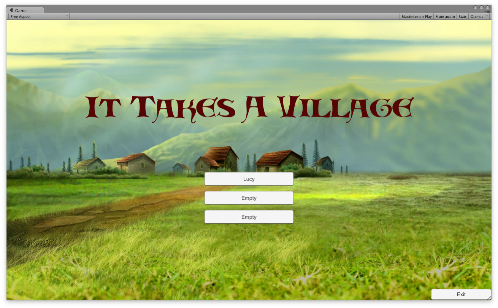
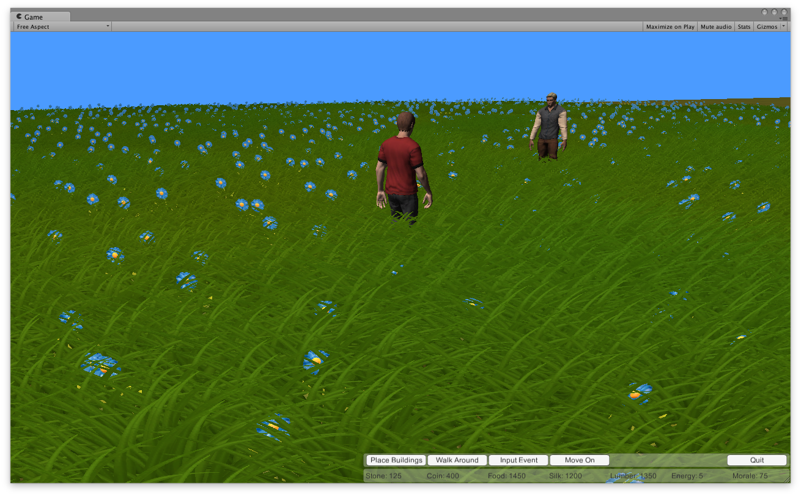
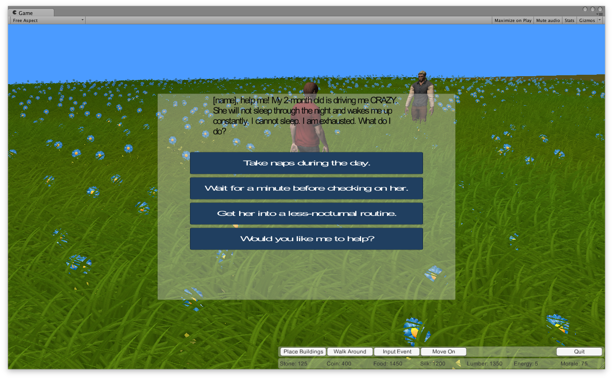
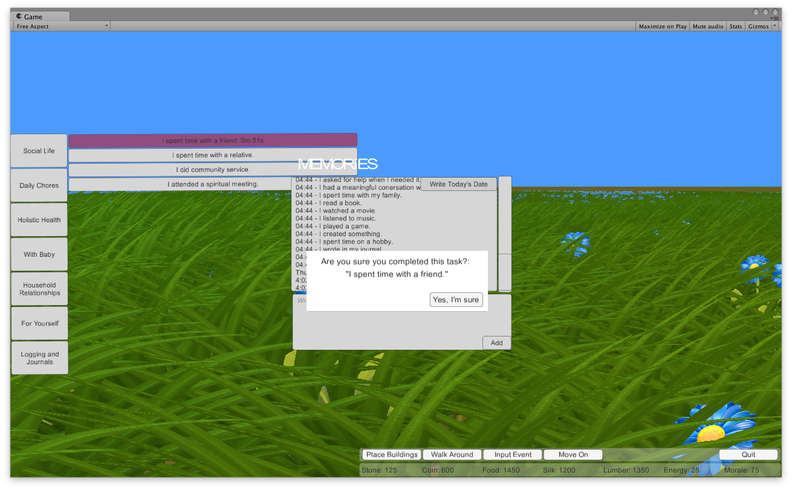
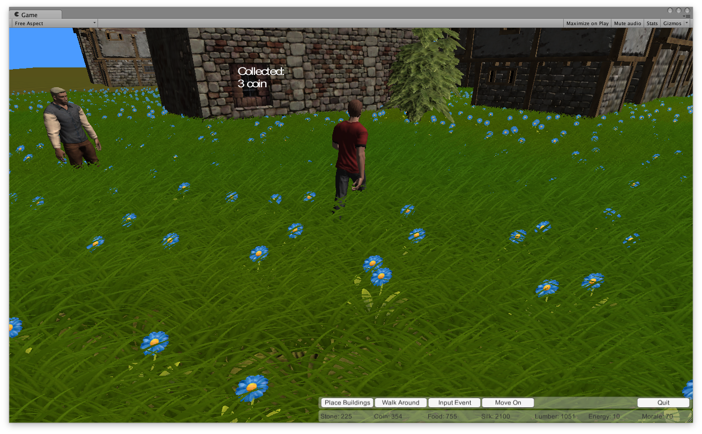
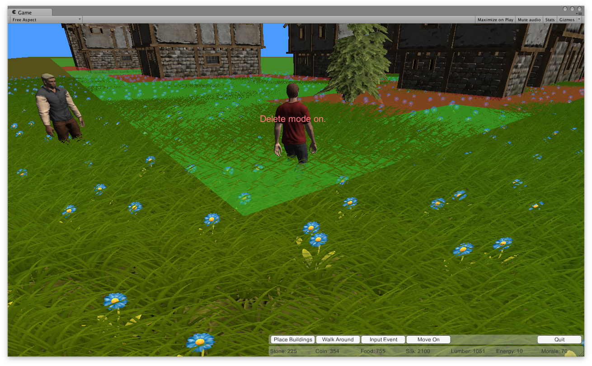
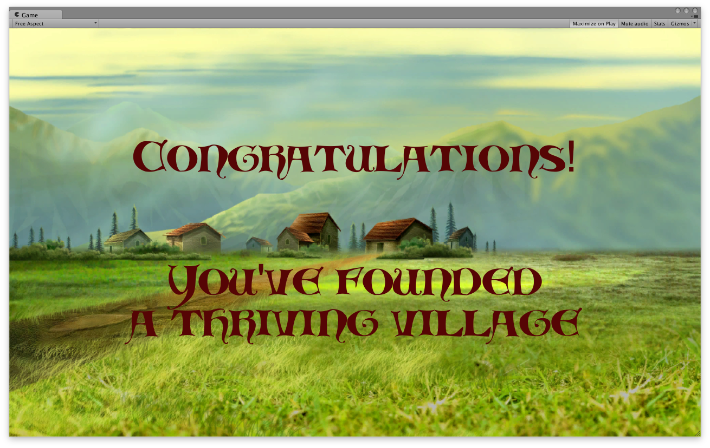

It Takes A Village is created for parents who are currently suffering from postpartum depression. By allowing parents to build a village using resources awarded for positive real-life behaviors, the game not only provides daily entertainment, but also incorporates well-researched therapy techniques (i.e. behaviorial training, cognitive restructuring, and problem solving) that aim to alleviate symptoms of postpartum depression.
Purpose
Postpartum depression is a specific type of depression that affects new parents, either after delivery or even after adopting, and can occur in both genders. It stems primarily from "postpartum baby blues," which is a brief period of mood swings, anxiety or difficulty sleeping that affect 80% of women.
If symptoms of postpartum baby blues worsen, symptoms of postpartum depression may develop. Parents may have difficulty bonding with their child, begin to withdraw from their family and friends, have reduced interest in activities that were once enjoyable, or have thoughts of harming their child or themselves.
When left untreated, postpartum depression may last for many months. Poor caregiving in a child's formative years can have long-lasting negative implications.
How It Plays
It Takes A Village was designed with visual and audio components that give a peaceful and mellow vibe to counter the stresses of postpartum depression. The game allows for multiple accounts so that more than one parent or caregiver can play.
At the start of the game, the parent is presented with two villagers. In the screenshot above, the character in red is the parent, and the other is a non-player character (NPC) that takes on the role of a friend who is also going through postpartum depression and seeking advice.
Upon clicking on the NPC, a dialog box pops up with a predicament that allows the parent to give advice to the NPC. Although the parent is asked to choose a response, all the options in the dialog box are appropriate ways to approach the problem. This therapeutic technique targets problem solving, allowing parents to choose their "favorite" piece of advice that perhaps resonates with their own lives the most, while also presenting insight on other viable solutions.
A major component of the game is the input event system that allows parents to log their real-life activities into the game in return for coins to build the village. This incorporates multiple therapeutic techniques, including cognitive restructuring and behavorial training. The navigation bar on the bottom right of the screen allows parents to switch among different scenes, including the Input Event scene, of the game.
There are several features of this input event system that are worth noting:
- Data saving -- exiting the game will not wipe out any parts of the game. This allows parents to return to the game, read back on their entries and feel encouragement or motivation from their progress
- Wait times between logging entries -- to encourage parents to be spend more time on real-life activities
- Confirmation pop-up -- to promote honesty and mindfulness in logging entries. There is only one option ("Yes, I'm sure") because the game is primarily focused on positive reinforcement rather than guilt
- Freedom to log personal notes -- personalizes the game and incorporates the benefits of writing therapy
- In-game awards -- logging real-life activities awards parents with different types of resources (stones, coins, food, silk, lumber, energy, morale) that can be used to purchase buildings for the village
The Place Buildings scene features a list of items that can be purchased to place in the village. Items that are highlighted in bright green are currently affordable by parents. Each item requires a varying amount of resources (i.e. a bank requires more coins than a house, but a tree requires more lumber points), and additional resources can be collected from items after they are placed in the village.
Switching to the Walk Around scene, parents can right-click and use the Q and E keys to navigate through their village. Left-clicking on items in the village collects resources that have accumulated over time.
Parents can further customize and revise their village by deleting any items that have already been placed.
The game is highly flexible and can be played indefinitely, but parents can choose to move on from the game at any time, in which case a Congratulations scene will appear.
Produced By
It Takes A Village was produced by 10 game developers and designers, in collaboration with 5 psychology students specializing in postpartum depression.
Developers and Designers:
Matthew Canestraro, Lucy K Tan, Evelyn Moss, Aaron Danielpour, Benjamin Poreh
Developers:
Tyler Mayle, Julie Kaplan, Jeremy Griffith, Sergiy Turchyn, Carlos Zamora
Psychology Students:
Rosemary Behmer, Daniel Ryave, Michaela Epperson, Ameera Khalid, Albert Lee